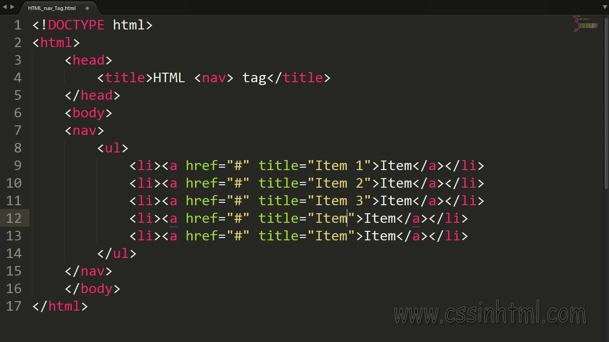

1.Beskriv kort vad global respektive lokal navigering är. Ta upp likheter och skillnader.
Svar:Det är http://www som är en länkadress som båda har. Skillnaden mellan global och lokal är att lokal har t.ex. index.hmtl som sedan kan innehålla en bild.
2.Beskriv kort vad supplementary respektive courtesy navigering är. Ta upp likheter och skillnader.
Svar:Supplementary är navigering som länkar till olika guider. Courtesy är en extra navigering som man inte hittar dirket på hemsidan.
3.Länka till någon valfri webbsida (dock ej den som används i föreläsningens exempel) och ange var man kan hitta ovanstående fyra typer av navigering.
Svar:http://www.facebook.se högst upp i sökfeltet kan man hitta den globala navigeringen. När man väl går in på sidan så kan man se ett inlägg där är lokala navigering till en sida.
Svar: När man kommer in på sidan så ser man de olika guiderna till olika saker det är supplementary navigering. Courtesy hittar man när man väll kommer till sidan som registera dig eller Logga in.
